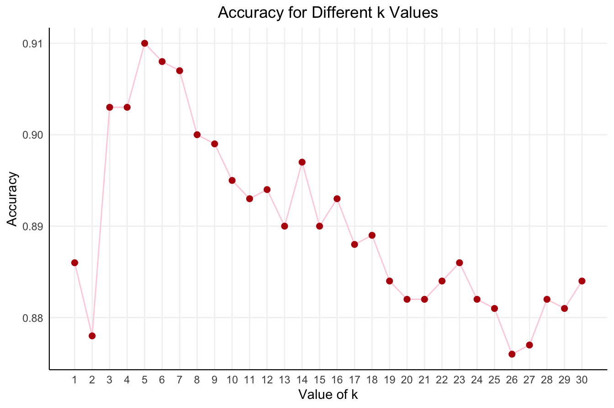

7 K-Nearest Neighbors
About K-Nearest Neighbors (knn) algorithm …
Here, we are going to use the following R packages:
-
liver: the bank and churn datasets are in this package. We also use the
partition(),kNN()functions in this package. - ggplot2: we use this package for visualization.
-
pROC: to create ROC curve and compute AUC values, we use the
roc()andauc()functions in this package.
If it’s needed, install these packages on your computer. Here we load them:
if(!require(liver )) install.packages("liver")
if(!require(ggplot2)) install.packages("ggplot2")
if(!require(pROC )) install.packages("pROC")
library(liver)
library(ggplot2)
library(pROC) 7.1 Classification for Bank direct marketing dataset
We aim to identify customer segments through the analysis of data from customers who have subscribed to a term deposit. This will enable us to determine the characteristics of customers who are more inclined to purchase the product.
7.1.1 Business Understanding
Find the best strategies to improve for the next marketing campaign. How can the financial institution have greater effectiveness for future marketing campaigns? To make a data-driven decision, we need to analyze the last marketing campaign the bank performed and identify the patterns that will help us find conclusions to develop future strategies.
7.1.1.1 Bank direct marketing info
Two main approaches for enterprises to promote products/services are:
- mass campaigns: targeting general indiscriminate public,
- directed marketing, targeting a specific set of contacts.
In general, positive responses to mass campaigns are typically very low (less than 1%). On the other hand, direct marketing focuses on targets that are keener to that specific product/service, making this kind of campaign more effective. However, direct marketing has some drawbacks, for instance, it may trigger a negative attitude towards banks due to the intrusion of privacy.
Banks are interested to increase financial assets. One strategy is to offer attractive long-term deposit applications with good interest rates, in particular, by using directed marketing campaigns. Also, the same drivers are pressing for a reduction in costs and time. Thus, there is a need for an improvement in efficiency: lesser contacts should be done, but an approximate number of successes (clients subscribing to the deposit) should be kept.
7.1.1.2 What is a Term Deposit?
A Term Deposit is a deposit that a bank or a financial institution offers with a fixed rate (often better than just opening a deposit account), in which your money will be returned at a specific maturity time. For more information with regards to Term Deposits please check here.
7.1.2 Data Undestanding
The bank dataset is related to direct marketing campaigns of a Portuguese banking institution. You can find more information related to this dataset at: https://rdrr.io/cran/liver/man/bank.html
The marketing campaigns were based on phone calls. Often, more than one contact (to the same client) was required, to access if the product (bank term deposit) would be (or not) subscribed. The classification goal is to predict if the client will subscribe to a term deposit (variable deposit).
We import the bank dataset:
data(bank) We can see the structure of the dataset by using the str() function:
str(bank)
'data.frame': 4521 obs. of 17 variables:
$ age : int 30 33 35 30 59 35 36 39 41 43 ...
$ job : Factor w/ 12 levels "admin.","blue-collar",..: 11 8 5 5 2 5 7 10 3 8 ...
$ marital : Factor w/ 3 levels "divorced","married",..: 2 2 3 2 2 3 2 2 2 2 ...
$ education: Factor w/ 4 levels "primary","secondary",..: 1 2 3 3 2 3 3 2 3 1 ...
$ default : Factor w/ 2 levels "no","yes": 1 1 1 1 1 1 1 1 1 1 ...
$ balance : int 1787 4789 1350 1476 0 747 307 147 221 -88 ...
$ housing : Factor w/ 2 levels "no","yes": 1 2 2 2 2 1 2 2 2 2 ...
$ loan : Factor w/ 2 levels "no","yes": 1 2 1 2 1 1 1 1 1 2 ...
$ contact : Factor w/ 3 levels "cellular","telephone",..: 1 1 1 3 3 1 1 1 3 1 ...
$ day : int 19 11 16 3 5 23 14 6 14 17 ...
$ month : Factor w/ 12 levels "apr","aug","dec",..: 11 9 1 7 9 4 9 9 9 1 ...
$ duration : int 79 220 185 199 226 141 341 151 57 313 ...
$ campaign : int 1 1 1 4 1 2 1 2 2 1 ...
$ pdays : int -1 339 330 -1 -1 176 330 -1 -1 147 ...
$ previous : int 0 4 1 0 0 3 2 0 0 2 ...
$ poutcome : Factor w/ 4 levels "failure","other",..: 4 1 1 4 4 1 2 4 4 1 ...
$ deposit : Factor w/ 2 levels "no","yes": 1 1 1 1 1 1 1 1 1 1 ...It shows that the bank dataset as a data.frame has 17 variables and 4521 observations. The dataset has 16 predictors along with the target variable deposit which is a binary variable with 2 levels “yes” and “no”. The variables in this dataset are:
-
age: numeric. -
job: type of job; categorical: “admin.”, “unknown”, “unemployed”, “management”, “housemaid”, “entrepreneur”, “student”, “blue-collar,”self-employed”, “retired”, “technician”, “services”. -
marital: marital status; categorical: “married”, “divorced”, “single”; note: “divorced” means divorced or widowed. -
education: categorical: “secondary”, “primary”, “tertiary”, “unknown”. -
default: has credit in default?; binary: “yes”,“no”. -
balance: average yearly balance, in euros; numeric. -
housing: has housing loan? binary: “yes”, “no”. -
loan: has personal loan? binary: “yes”, “no”.
Related with the last contact of the current campaign:
-
contact: contact: contact communication type; categorical: “unknown”,“telephone”,“cellular”. -
day: last contact day of the month; numeric. -
month: last contact month of year; categorical: “jan”, “feb”, “mar”, …, “nov”, “dec”. -
duration: last contact duration, in seconds; numeric.
Other attributes:
-
campaign: number of contacts performed during this campaign and for this client; numeric, includes last contact. -
pdays: number of days that passed by after the client was last contacted from a previous campaign; numeric, -1 means client was not previously contacted. -
previous: number of contacts performed before this campaign and for this client; numeric. -
poutcome: outcome of the previous marketing campaign; categorical: “success”, “failure”, “unknown”, “other”.
Target variable:
-
deposit: Indicator of whether the client subscribed a term deposit; binary: “yes” or “no”.
Here we report the summary of the dataset:
summary(bank)
age job marital education default
Min. :19.00 management :969 divorced: 528 primary : 678 no :4445
1st Qu.:33.00 blue-collar:946 married :2797 secondary:2306 yes: 76
Median :39.00 technician :768 single :1196 tertiary :1350
Mean :41.17 admin. :478 unknown : 187
3rd Qu.:49.00 services :417
Max. :87.00 retired :230
(Other) :713
balance housing loan contact day
Min. :-3313 no :1962 no :3830 cellular :2896 Min. : 1.00
1st Qu.: 69 yes:2559 yes: 691 telephone: 301 1st Qu.: 9.00
Median : 444 unknown :1324 Median :16.00
Mean : 1423 Mean :15.92
3rd Qu.: 1480 3rd Qu.:21.00
Max. :71188 Max. :31.00
month duration campaign pdays
may :1398 Min. : 4 Min. : 1.000 Min. : -1.00
jul : 706 1st Qu.: 104 1st Qu.: 1.000 1st Qu.: -1.00
aug : 633 Median : 185 Median : 2.000 Median : -1.00
jun : 531 Mean : 264 Mean : 2.794 Mean : 39.77
nov : 389 3rd Qu.: 329 3rd Qu.: 3.000 3rd Qu.: -1.00
apr : 293 Max. :3025 Max. :50.000 Max. :871.00
(Other): 571
previous poutcome deposit
Min. : 0.0000 failure: 490 no :4000
1st Qu.: 0.0000 other : 197 yes: 521
Median : 0.0000 success: 129
Mean : 0.5426 unknown:3705
3rd Qu.: 0.0000
Max. :25.0000
7.1.3 Data Preparation
We partition the bank dataset randomly into two groups: train set (80%) and test set (20%). Here, we use the partition() function from the liver package:
set.seed(5)
data_sets = partition(data = bank, prob = c(0.8, 0.2))
train_set = data_sets$part1
test_set = data_sets$part2
actual_test = test_set$depositNote that here we are using the set.seed() function to create reproducible results.
We want to validate the partition by testing whether the proportion of the target variable deposit differs between the two data sets. We use a Two-Sample Z-Test for the difference in proportions. To run the test, we use the prop.test() function in R:
x1 = sum(train_set$deposit == "yes")
x2 = sum(test_set $deposit == "yes")
n1 = nrow(train_set)
n2 = nrow(test_set)
prop.test(x = c(x1, x2), n = c(n1, n2))
2-sample test for equality of proportions with continuity correction
data: c(x1, x2) out of c(n1, n2)
X-squared = 2.3955, df = 1, p-value = 0.1217
alternative hypothesis: two.sided
95 percent confidence interval:
-0.003830717 0.041306729
sample estimates:
prop 1 prop 2
0.1191608 0.1004228Based on the output, answer the following questions:
Why is the above hypothesis test suitable for the above research question? Provide your reasons.
Specify the null and alternative hypotheses?
Explain that you reject or do not reject the null hypothesis, at \(\alpha=0.05\). What would be your statistical conclusion?
What would be a non-statistical interpretation of your findings in c?
Solution:
A Two-sample z-test is suitable here, mainly because we want to compare the proportion of the customers who paid for the deposit between the two groups (“training set” and “test set”).
The hypotheses are as follows \[ \bigg\{ \begin{matrix} H_0: \pi_{deposit,\ train} = \pi_{deposit,\ test} \\ H_a: \pi_{deposit,\ train} \neq \pi_{deposit,\ test} \end{matrix} \]
We don’t reject the \(H_0\), since the p-value is higher than \(\alpha=0.05\). Thus, the difference in the proportion of the costumers who paid for the deposit is not statistically significant between the two groups (“training set” and “test set”).
Since we did not reject the null hypothesis, we infer that the proportions of people that subscribed to the term deposit in the training and test partitions are not different. This suggests that the partitioning based on the target variable
depositis valid.
7.1.4 Classification using the kNN algorithm
The results from the “Exploratory Data Analysis (EDA)” (from last week) indicate that the following predictors from 16 predictors in the bank dataset are important to predict deposit.
age, default, balance, housing, loan, duration, campaign, pdays, and previous.
Thus, here, based on the training dataset, we want to apply kNN algorithm, by using above predictors in our model. We use the following formula:
formula = deposit ~ age + default + balance + housing + loan + duration + campaign + pdays + previousNOTE: The above formula means deposit is the target variable and the rest of the variables in the right side of tilde (“~”) are independent variables.
Based on the training dataset, we want to find the k-nearest neighbor for the test data set. Here we use two different values for k (k = 3 and k = 10). We use the kNN() function from the R package liver:
predict_knn_3 = kNN(formula, train = train_set, test = test_set, k = 3)
predict_knn_10 = kNN(formula, train = train_set, test = test_set, k = 10)To have an overview of the prediction result, we report Confusion Matrix for two different values of k by using the conf.mat function:
(conf_knn_3 = conf.mat(predict_knn_3, actual_test))
Actual
Predict no yes
no 806 76
yes 45 19
(conf_knn_10 = conf.mat(predict_knn_10, actual_test))
Actual
Predict no yes
no 834 74
yes 17 21We also could report Confusion Matrix by using the conf.mat.plot() command:
conf.mat.plot(predict_knn_3, actual_test, main = "kNN with k = 3")
conf.mat.plot(predict_knn_10, actual_test, main = "kNN with k = 10")
What do these values mean? Explain what conclusion you will draw.
Solution:
A confusion matrix is a table that is often used to describe the performance of a classification model (or classifier) on a set of test data for which the true values are known. The values of the Confusion Matrix are the “true positive”(TP), “false positive”(FP), “true negative”(TN), and “false negative”(FN) predictions.
At the 2 different k-nearest neighbors these number of the four different predictions outcomes differ. When k=3, then there are less true values then when k=10. So when more neighbors are chosen, more true values are found. Regarding to the above confusion matrices:
for the case k=3, we have “806 + 19” correct predictions and “76 + 45” wrong predictions.
for the case k=10, we have “834 + 21” correct predictions and “74 + 17” wrong predictions.
The comparison of the confusion matrices for the k = 3 and k = 10 indicates that the the kNN algorithm has more accuracy for the case k = 10.
7.1.5 kNN algorithm with data transformation
The predictors that we used in the previous question, do not have the same scale. For example, variable duration change between 4 and 3025, whereas the variable loan is binary. In this case, the values of variable duration will overwhelm the contribution of the variable loan. To avoid this situation we use normalization. So, we use min-max normalization and transfer the predictors.
Now, we find the k-nearest neighbor for the test set, based on the training dataset, for the k = 10:
predict_knn_10_trans = kNN(formula, train = train_set, test = test_set, transform = "minmax", k = 10)
conf.mat.plot(predict_knn_10_trans, actual_test)
7.1.6 Optimal value of k for the kNN algorithm
In the previous questions, for finding the k-nearest neighbor for the test set, we set k = 10. But why 10? Here, we want to find out the optimal value of k based on our dataset.
To find out the optimal value of k based on Error Rate, for the different values of k from 1 to 30, we run the k-nearest neighbor for the test set and compute the Error Rate for these models, by running kNN.plot() command
kNN.plot(formula, train = train_set, test = test_set, transform = "minmax",
k.max = 30, set.seed = 7)
The plot shows that the minimum value of MSE is for the case that k is 8. Since the smaller values of MSE indicates better predictions, in this case, the optimal value of k would be 8.